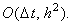
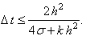
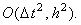
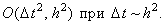

|
В заключение приведём сравнительную характеристику
разностных схем, аппроксимирующих одномерное дифференциальное уравнение
параболического типа:
1. Явная разностная схема
Имеет порядок аппроксимации 
Условно устойчива 
Решается с помощью рекуррентного соотношения (4.4).
2. Неявная разностная схема
Имеет порядок аппроксимации
Абсолютно устойчива
Решается методом прогонки
3. Разностная схема Кранка-Николсона
Имеет порядок аппроксимации 
Абсолютно устойчива
Решается методом прогонки
4. Разностная схема Саульева
Имеет порядок аппроксимации 
Абсолютно устойчива
Решается с помощью рекуррентных соотношений (4.25) и (4.26)
|